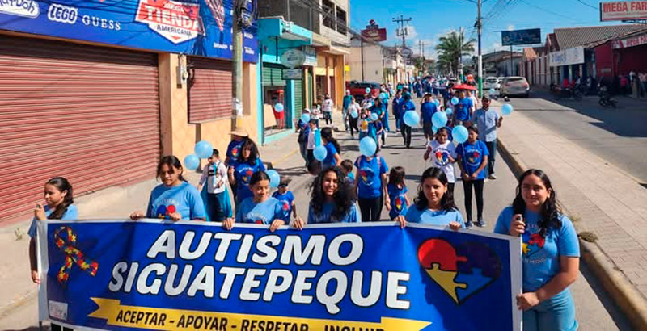

Bienvenidos a Autismo Siguatepeque
Desarrollando el potencial de niños con autismo
Nuestra Misión
En Autismo Siguatepeque nos dedicamos a brindar atención de alta calidad a niños y niñas con autismo, desarrollando sus habilidades sociales, comunicativas y cognitivas a través de técnicas terapéuticas especializadas.
Noticias y Eventos Recientes
Taller para Padres
Únete a nuestro próximo taller sobre estrategias de comunicación para niños con autismo.
28 de diciembre, 2025

Campaña de Donaciones
Ayúdanos a adquirir nuevos materiales terapéuticos para nuestros niños.
En curso

Programa de Voluntariado
Buscamos voluntarios comprometidos para apoyar nuestras actividades.
Inscripciones abiertas